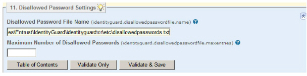

|
IdentityGuard Server 12.0 Administration Guide |
|
IdentityGuard Server 12.0 Administration Guide |
If you plan to create and use a file containing disallowed passwords, use the Properties Editor to tell Entrust IdentityGuard where to find that file. For information about this file, see Creating a disallowed password list. If you do not set this property to a valid file, Entrust IdentityGuard does not check for disallowed passwords.
To set disallowed password file properties
1. Start the Entrust IdentityGuard Properties Editor. (See Log in or out of the Properties Editor.)
2. On the Table of Contents, click Disallowed Password Settings.

3. In the Disallowed Password File Name field, enter the name and location of the disallowed password file. When Entrust IdentityGuard starts up, it looks for the file and location given in this property. By default, the file is located in the etc directory and is called disallowedpasswords.txt.
4. In the Maximum Number of Disallowed Passwords field, specify the maximum number of entries allowed in the disallowed password file. If the file contains more than the maximum number of entries, the extra entries are not read. A setting of 0 or an empty file disables password checking. The default is 1000. All passwords are held in memory, so having more than 1000 entries can reduce performance.
5. Click Validate & Save.
6. Log out of the Properties Editor and restart the Entrust IdentityGuard server service after you make all property changes.